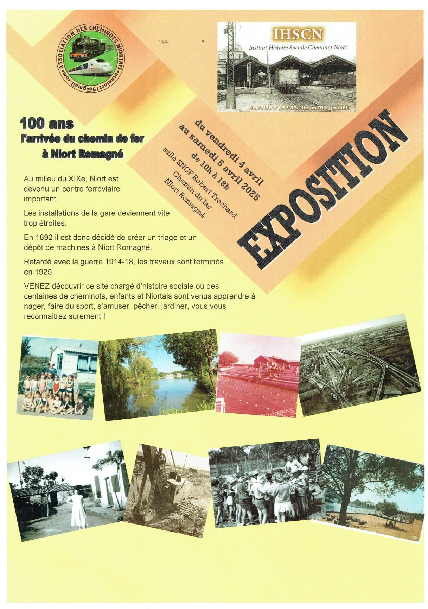

Annonce archivée
Les cheminots niortais fêtent le centenaire de l’arrivée du rail à Niort-Romagné
Date indiquée par Facebook · 3 avril 2025
Repères éditoriaux
L’Institut historique et social des cheminots niortais nous invitait à une exposition les 4 et 5 avril 2025, salle Robert-Trochard, dans le quartier de Saint-Florent. L’entrée était annoncée gratuite.
Texte conservé avec la publication
L'Institut Historique et Social
des Cheminots Niortais (IHSCN)
vous propose une exposition pour le centenaire de l'arrivée du Chemin de Fer à Niort Romagné....
Cette exposition sera visible
vendredi 4 et samedi 5 avril 2025
à la salle Robert Trochard -
chemin du lac - à Niort Romagné
(quartier de St Florent)...
L'entrée est gratuite...

Sources
Archive rouge · export Facebook · AR-0002-FB-01151